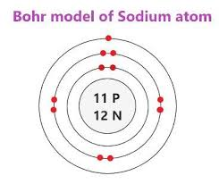
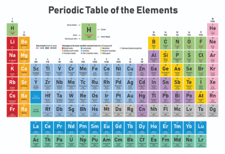

This is the Bohr model page
In the bohr model there are three rings. These have different amount of electrons. The first ring CAN only have two electrons.
The second and so on can have eight electrons.
If you don't know what electrons are I will tell you. The atom is the smallest unit. A electron is a subatomic particle.
They give off negative charge. They have no smaller particles.
In the middle of an atome there is an nucleus with protons and neutrons.
Protons have a positive charge. Neutrons have no charge at all.
The number of protons and electrons are the same.

Ready for your mind to be blown.
The subatomic particles I talked about have even smaller particles; the nuetrons and the protons have quarks in them.
A proton is made up of of two up quarks and one down quark.
A nuetron is made up of two down quarks and one up quark.
There are many different quarks but not that many; there is the up quark, down quark, top quark, bottom quark, charm quark and starnge quark.
What's that I hear "what about an electron what quarks is it made of!"
Well an electron is a elementary particles meaning they can't be made of smaller particles.
I hope you had a fun time reading all of these.
